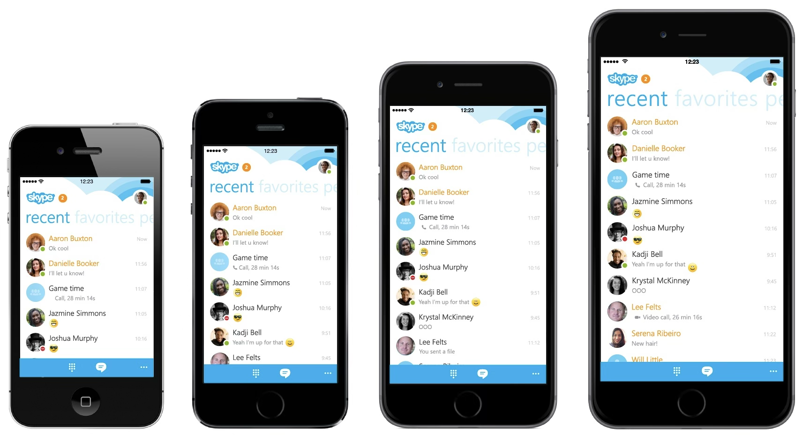

Following Skype's integration into Microsoft, the product needed a visual and brand refresh that felt unmistakably Microsoft while remaining recognisably Skype to its loyal, long-standing user base. I worked on this as the sole UX researcher embedded in a small cross-functional team — a visual designer, an interaction designer, a PM, and a prototyper — across an iterative research process of around four studies, from early usability testing through to a final brand and desirability check-in.
Alongside usability testing across the redesign's iterations, I ran a desirability and emotion check-in at the end of the process, adapted from the Microsoft Desirability Toolkit: participants selected several words from a balanced set of positive and negative reactions that described their experience, then talked me through why they'd chosen each one — once for overall desirability, once specifically for emotional response to the new visual identity. Throughout, I focused on protecting the core user flows the existing base relied on — flows that, over years, had become habitual. The clearest example was the ability to see, at a glance, which contacts were currently online.
An early design direction shifted the primary view toward "recent calls," which didn't reliably surface who was currently online. For core users, this was a different mental model entirely — recent calls answered "who did I speak to," not "who's around right now," which was how they'd always used Skype to decide who to reach out to. Usability testing combined with BI data confirmed this was a load-bearing use case, central to how people actually navigated the product day to day.
I presented these findings — usability data, desirability and emotion results, and BI data on how often people tapped through to call someone specifically because they were shown as online — in a formal readout to the full team, then followed up through ongoing design check-ins. Online status visibility was reinstated as a clear, prominent part of the redesigned contact list, alongside the new Microsoft-aligned visual language, Metro.

This is a good illustration of where research's influence actually sits. The insight I fought for held up, even through a later reversal of the broader design direction around it. But a research insight can only protect what it's scoped to protect — the larger bet of carrying a Windows Phone-style identity onto iOS sat above where my research had reach, and the market eventually corrected it. Knowing the boundary of your own evidence, and being honest when something outside that boundary didn't hold, is part of the job.